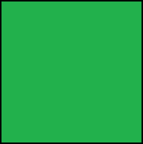

Nariši stopnice I.


Napiši zmajčku navodilo po katerem bo pobarval vsa označena polja.
V programu uporabi
blok ponavljaj,
zanko for,
tako se ista skupina blokov uporabi večkrat zaporedoma, zato je blok ponavljaj tudi zanka.
Trikrat zaporedoma lahko uporabiš dva bloka, kot vidiš na sliki spodaj:
Vendar raje uporabi zanko ponavljaj 3 krat, saj boš uporabil manj blokov. Primer, kako uporabiš zanko, je na sliki spodaj: .
Število ponovitev spremeniš tako, da klikneš na številko in vtipkaš novo vrednost s tipkovnico.
Primer: bolje kot, da trikrat napišeš isto navodilo:
gor()
pobarvaj()
gor()
pobarvaj()
gor()
pobarvaj()
lahko uporabiš zanko:
for loop in range(3):
gor()
pobarvaj()